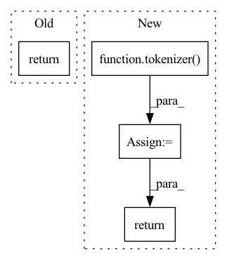

Pattern ID :31263
Before Change
for pipeline in pipelines:
if pipeline.sequence_length > current_seq_len:
return pipeline
return pipelines[-1]
@staticmethod
def _get_current_sequence_length(input_schema):After Change
:return: The correct Pipeline object (or Bucket) to route input to
tokenizer = pipelines[0].tokenizer
tokens = tokenizer(
input_schema.sequences,
add_special_tokens=True,
return_tensors="np",
padding=False,
truncation=False,
)
input_seq_len = len(tokens)
return TransformersPipeline.select_bucket_by_seq_len(input_seq_len, pipelines)
In pattern: SUPERPATTERN
Frequency: 3
Non-data size: 4
Instances Fragment ID: 91648158
Project Name: neuralmagic/deepsparse
Commit Name: 20f708e7d739d5395b74dcbdcca1e48811d4bda1
Time: 2022-07-28
Author: rahul@neuralmagic.com
File Name: src/deepsparse/transformers/pipelines/text_classification.py
M Class Name: TextClassificationPipeline
N Class Name: TextClassificationPipeline
M Method Name: route_input_to_bucket(0)
N Method Name: route_input_to_bucket(0)
M Parent Class: TransformersPipeline
N Parent Class: TransformersPipeline
M File Name: src/deepsparse/transformers/pipelines/text_classification.py
N File Name: src/deepsparse/transformers/pipelines/text_classification.py
M Start Line: 308
M End Line: 315
N Start Line: 308
N End Line: 317
Before Change
for pipeline in pipelines:
if pipeline.sequence_length > current_seq_len:
return pipeline
return pipelines[-1]
// utilities below adapted from transformers
After Change
:return: The correct Pipeline object (or Bucket) to route input to
tokenizer = pipelines[0].tokenizer
tokens = tokenizer(
input_schema.inputs,
add_special_tokens=True,
return_tensors="np",
padding=False,
truncation=False,
)
input_seq_len = len(tokens)
return TransformersPipeline.select_bucket_by_seq_len(input_seq_len, pipelines)
// utilities below adapted from transformers
Fragment ID: 91648157
Project Name: neuralmagic/deepsparse
Commit Name: 20f708e7d739d5395b74dcbdcca1e48811d4bda1
Time: 2022-07-28
Author: rahul@neuralmagic.com
File Name: src/deepsparse/transformers/pipelines/token_classification.py
M Class Name: TokenClassificationPipeline
N Class Name: TokenClassificationPipeline
M Method Name: route_input_to_bucket(0)
N Method Name: route_input_to_bucket(0)
M Parent Class: TransformersPipeline
N Parent Class: TransformersPipeline
M File Name: src/deepsparse/transformers/pipelines/token_classification.py
N File Name: src/deepsparse/transformers/pipelines/token_classification.py
M Start Line: 408
M End Line: 421
N Start Line: 408
N End Line: 417
Before Change
doc_section_to_text_map = documents_to_document_section_text_map(docs)
batch_encodings = tokenizer(list(doc_section_to_text_map.values()))
return batch_encodings, list(doc_section_to_text_map.keys())
def get_match_entity_class_hash(ent: Entity) -> int:After Change
id_section_map = documents_to_id_section_map(docs)
strings = [section.text for section in id_section_map.values()]
batch_encodings = tokenizer(
strings,
stride=stride,
max_length=max_length,
truncation=TruncationStrategy.LONGEST_FIRST,
return_overflowing_tokens=True,
padding=PaddingStrategy.MAX_LENGTH,
)
return batch_encodings, id_section_map
def get_match_entity_class_hash(ent: Entity) -> int: Fragment ID: 91648152
Project Name: astrazeneca/kazu
Commit Name: 6d3b478711b45c3afe0cbf978e7a51942d53e0c2
Time: 2021-11-16
Author: richard.jackson4@astrazeneca.com
File Name: azner/utils/utils.py
M Class Name: AnonimousClass
N Class Name: AnonimousClass
M Method Name: documents_to_document_section_batch_encodings_map(4)
N Method Name: documents_to_document_section_batch_encodings_map(2)
M Parent Class:
N Parent Class:
M File Name: azner/utils/utils.py
N File Name: azner/utils/utils.py
M Start Line: 33
M End Line: 42
N Start Line: 51
N End Line: 69